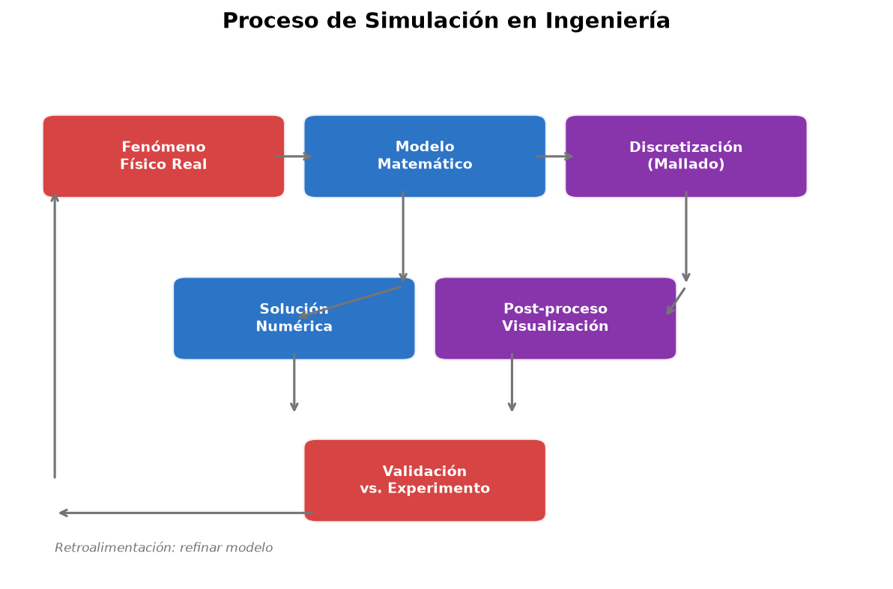

¿Qué es simular?
La simulación como tercer pilar de la ingeniería.
Agenda de la sesión
Teoría
Los 3 pilares de la ingeniería, el costo de una mala simulación, y la regla de oro.
Fenómeno → Modelo
Abstracción, ecuaciones gobernantes, condiciones de frontera y modelos constitutivos.
Herramientas
La caja de herramientas de simulación. Por qué FreeCAD + CalculiX para este curso.
Práctica
Viga en voladizo: del enunciado al resultado. Verificación contra la fórmula de flexión.
La simulación: tercer pilar de la ingeniería
Históricamente la ingeniería descansó sobre dos pilares. Hoy son tres — y la simulación complementa, no reemplaza.
Modelos matemáticos
Fortaleza: generalizable, exacta dentro de sus supuestos.
Debilidad: solo soluble para geometrías simples.
Ensayos y prototipos
Fortaleza: realidad física completa.
Debilidad: costoso, lento, no siempre factible.
Cómputo
Fortaleza: rápida, exploratoria, repetible.
Debilidad: depende de la calidad del modelo.
¿Para qué sirve simular?
Predecir
Comportamiento de un sistema antes de construirlo: análisis predictivo.
Optimizar
Explorar diseños sin fabricar múltiples prototipos físicos.
Diagnosticar
Analizar fallas en sistemas existentes: ingeniería forense.
Explorar
Escenarios imposibles o peligrosos de reproducir experimentalmente.
Certificar
Demostrar que un diseño cumple normas y estándares de la industria.
El costo de una mala simulación
Una simulación mal hecha es peor que ninguna: genera falsa confianza.
Puente de Tacoma Narrows
Los modelos estáticos no capturaron los efectos aeroelásticos. El puente colapsó por oscilaciones de torsión.
Plataforma Sleipner A
Un error en la malla de elementos finitos subestimó los esfuerzos en una celda crítica. Hundimiento en el Mar del Norte [1].
La caja de herramientas
| Software | Tipo | Fortaleza principal |
|---|---|---|
| ANSYS | Comercial | Suite completa: estructural, CFD, electromagnetismo, multifísica |
| Abaqus | Comercial | No linealidades avanzadas, contacto, grandes deformaciones |
| SolidWorks Simulation | Comercial | Integración CAD–simulación, ideal para diseñadores |
| FreeCAD FEM | Open-source | Acceso libre, ideal para aprendizaje y geometrías moderadas |
| CalculiX | Open-source | Solver similar a Abaqus, compatible con formatos industriales |
| FEniCSx | Open-source | Framework Python para FEM personalizado; investigación |
| COMSOL | Comercial | Multifísica acoplada por excelencia |
Modelar es elegir qué simplificar
La pregunta no es si el modelo es "correcto", sino si es útil para el propósito.
Realidad (viga de acero)
- · Micro-defectos y rugosidad
- · Soldadura imperfecta
- · Variaciones de E en el lote
- · Condiciones ambientales
- · Vibraciones del entorno
Modelo ingenieril
- · Sección constante
- · Material homogéneo e isótropo
- · Empotramiento perfecto
- · Carga puntual ideal
- · Pequeñas deformaciones
Las ecuaciones gobernantes
Cada fenómeno físico tiene ecuaciones que lo gobiernan. No hay que memorizarlas: hay que saber que existen y qué significan sus términos.
| Fenómeno | Ecuación gobernante | Variable primaria |
|---|---|---|
| Elasticidad lineal | ∇·σ + f = 0 (equilibrio) | Desplazamientos u |
| Transferencia de calor | ρcp ∂T/∂t = ∇·(k∇T) + q̇ | Temperatura T |
| Flujo de fluidos | Navier–Stokes | Velocidad v, presión p |
| Electromagnetismo | Ecuaciones de Maxwell | Campos E, B |
Condiciones de frontera: donde el modelo toca el mundo
Las EDP tienen infinitas soluciones. Las condiciones de frontera (CF) seleccionan la suya. Son la fuente más frecuente de errores.
| Tipo | Qué fija | Ejemplo estructural | Ejemplo térmico |
|---|---|---|---|
| Dirichlet (esencial) | Valor de la variable primaria | u = 0 (empotramiento) | T = T₀ |
| Neumann (natural) | Flujo / derivada | σ·n = t (presión) | −k∇T·n = q |
| Robin (mixta) | Combinación lineal | Soporte elástico | Convección |
Modelos constitutivos: cómo responde el material
| Modelo | ¿Cuándo usarlo? | Limitación |
|---|---|---|
| Elástico lineal | Pequeñas deformaciones, sin plasticidad | No captura fluencia ni daño |
| Elasto-plástico (von Mises) | Metales dúctiles con plasticidad | No captura daño progresivo |
| Hiperelástico (Mooney-Rivlin) | Elastómeros, tejidos biológicos | Requiere datos experimentales de calibración |
| Viscoelástico | Polímeros, comportamiento dependiente del tiempo | Complejidad de parámetros |
| Ortotrópico / Anisotrópico | Maderas, composites, laminados | Más constantes elásticas que medir |
Lineal vs. no lineal: decisión fundamental
| Característica | Lineal | No lineal |
|---|---|---|
| Geometría | Pequeños desplazamientos | Grandes desplazamientos, pandeo |
| Material | E y ν constantes | Plasticidad, hiperelasticidad |
| Contacto | No hay, o es fijo | Contacto con fricción, separación |
| Costo | Bajo O(N)–O(N²) | Alto O(N²)–O(N³) |
| Superposición | Válido | NO válido |
El flujo de simulación

1 · Fenómeno físico
El problema real: cargas, apoyos, material.
2 · Modelo matemático
Ecuaciones + CF + constitutivo.
3 · Discretización
Malla de elementos finitos.
4 · Resultados
Desplazamientos → deformaciones → esfuerzos.
5 · Validación
¿Tiene sentido físico? ¿Converge? ¿Compara?
Viga en voladizo — el problema
Enunciado
- · Viga de acero: 200 × 20 × 10 mm
- · Empotrada en un extremo
- · Carga puntual P = 100 N en el extremo libre
- · Acero: E = 210 GPa, ν = 0.3
Pregunta de diseño
¿Cuánto se deflecta el extremo libre y cuál es el esfuerzo máximo?
Primero calculamos a mano (solución analítica), luego en FreeCAD, y comparamos.
Solución analítica: la referencia
Inercia de la sección
Deflexión máxima
δ = 100·200³/(3·210000·1666.7)
δ ≈ 0.76 mm
Esfuerzo máximo
σ ≈ 60 MPa
Plan de trabajo en FreeCAD FEM
- Geometría — Part → Box: 200 × 20 × 10 mm
- Análisis — FEM → New Analysis; material acero (E=210000 MPa, ν=0.3)
- Condiciones — Fixed constraint en la cara del empotramiento; Force de 100 N en el extremo libre
- Malla — Gmsh, tamaño de elemento 5 mm
- Solver — CalculiX: escribir input, ejecutar
- Resultados — desplazamiento y esfuerzo von Mises; comparar con δ = 0.76 mm y σ = 60 MPa
Los errores que veremos hoy (y en todo el curso)

Taller 1 — Viga: modelo, verifica, explora
Parte A · Modelar y verificar
- Viga en voladizo 200×20×10 mm, P = 100 N
- Simular con mallas de 10, 5 y 2.5 mm
- Reportar δ y σmáx en cada malla
- Comparar con solución analítica (δ = 0.76 mm, σ = 60 MPa)
Parte B · Explorar la sensibilidad
- Variar E: 200, 210, 220 GPa
- Registrar δ: ¿proporcional a 1/E? (debería serlo: δ ∝ 1/E)
- Variar la carga: 50, 100, 150 N
- ¿Se mantiene σ/δ lineal? Justificar con los datos
Lo que debe quedar hoy
Simular ≠ confiar
Todo resultado es una hipótesis. La regla de oro de la guía.
Modelar = simplificar
Conozca la brecha de modelado y declárela.
Verificar siempre
Solución analítica primero; FEM después; comparar y explicar diferencias.
Recursos de la sesión
Guía de referencia
- Cap. 1 — Introducción: ¿qué es simular?
- Cap. 2 — Del fenómeno al modelo matemático
- Cap. 4.4 — Post-procesamiento (singularidades)
- Cap. 5 — Errores comunes
Archivos del curso
- ejercicio_paso_a_paso.html — guía detallada
- taller.html — enunciado + rúbrica
- video/guion.md — guion del video asíncrono
- Notebooks guía: 01_intro_fem_barra.ipynb
Referencia [1] B. Jakobsen y F. Rosendahl, "The Sleipner Platform Accident," Structural Engineering International, vol. 4, no. 3, pp. 190–193, 1994.